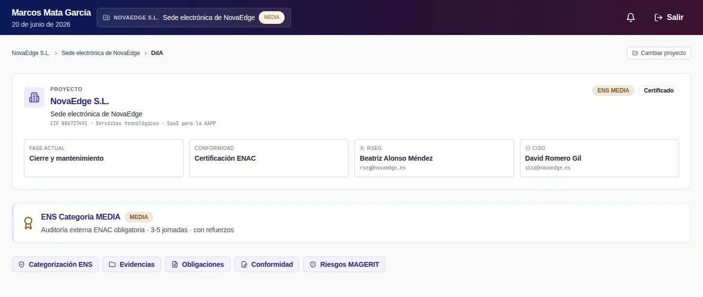

Fulkro llevaba a una empresa desde la categorización de su sistema hasta la declaración de conformidad que revisa la entidad certificadora: análisis de riesgos MAGERIT, declaración de aplicabilidad, plan de adecuación, evidencias firmadas y cuatro portales conectados.
Las decisiones normativas las tomaban 44 motores deterministas, trazables ante un auditor. 12 agentes de IA y un copiloto con RAG redactaban y explicaban, siempre con la procedencia del texto a la vista.
Fulkro se diseñó, se construyó y se operó de principio a fin por una sola persona. En septiembre de 2026 el proyecto se detuvo por falta de tracción comercial, con la plataforma terminada, verificada y documentada. No presta servicio ni acepta clientes. El código completo se publica bajo Apache-2.0 en github.com/Fulkrodev/Fulkrosys, y se levanta en local con un comando y datos de demostración.
Una grabación real del producto sobre el entorno de demostración: el consultor recorre el ciclo ENS en administración, el cliente revisa y firma en su portal y el auditor comprueba la cobertura en modo de sólo lectura. Pulsa un capítulo para saltar a él.
Lo que se decidía en riesgos se reflejaba en las medidas, las medidas pedían sus evidencias y las evidencias llegaban listas al auditor. Estas son las piezas.
Categorización por las cinco dimensiones del Anexo I, MAGERIT v3, declaración de aplicabilidad, plan con Gantt, implantación, simulacro de auditoría y declaración de conformidad.
44 motores de dominio. Cada regla normativa vive en uno solo, con tests que impiden duplicarla, y los dos ejes del Anexo II están verificados contra el BOE.
12 agentes con salida estructurada y un copiloto que explica cada pantalla, cita el RD 311/2022 y responde en streaming. Cada texto declara su procedencia.
1.031 fragmentos del RD 311/2022 y de la legislación de la UE, embeddings e5-large de 1024 dimensiones en pgvector y una recuperación elegida por evaluación.
123 plantillas (35 políticas, 36 procedimientos, 41 entregables y registros) que salen en DOCX y PDF con los datos del proyecto, versionadas y firmables.
Antivirus, sello SHA-256 y firma Ed25519 en cada evidencia, guardada en un almacén WORM con retención de 7 años. El auditor ve la cobertura medida contra ella.
Firma sobre lienzo (eIDAS art. 25.1) con sello Ed25519, cadena de hashes por documento, verificación por OTP y la firma incrustada en el PDF.
Conectores de sólo lectura para Microsoft 365 y Google Workspace, y 13 servidores MCP de verificación (nube, red, web, SAST…) tras un guardián de alcance.
Coste de cada llamada al modelo registrado, un monitor que aplica el ENS Medio a la propia plataforma, copias cifradas y 20 tareas programadas.
Cada fase consume lo que produjo la anterior. Elige una para ver qué motor la resuelve, qué produce y qué hace falta para pasar a la siguiente.
Capturas reales del producto. El consultor construye el ENS en administración; el cliente ve, autoriza y firma en su portal; el auditor recibe el expediente en sólo lectura; y cualquiera puede verificar una firma sin entrar.

Fulkro aplicaba el ENS sobre sí misma. La plataforma mantenía su propio cumplimiento bajo el mismo rigor que implantaba en el cliente, para no introducir riesgo en su organización.
Contraseña y WebAuthn o TOTP.
Correo, contraseña y MFA.
Enlace Ed25519 y código de un solo uso.
Enlace firmado.
Ninguna decisión normativa depende de un modelo de lenguaje: la categoría, las medidas que aplican y los plazos los calcula un motor determinista. La IA redacta, resume y explica, con salida estructurada, citas obligatorias y la procedencia de cada texto a la vista.

Las secciones narrativas del diagnóstico E-090; los datos los calcula el motor.
Revisa los contratos del cliente con sus proveedores y detecta brechas ENS y RGPD.
Añade criterio de auditor sénior al simulacro determinista de 58 preguntas.
Evalúa las respuestas del cliente a las preguntas del auditor.
Conversa sobre la pantalla actual con RAG, citas y respuesta en streaming.
Puntúa una oportunidad tras el primer contacto.
Recalcula en vivo las conclusiones de la reunión a partir de las notas.
Redacta la propuesta sobre la tarifa que calcula el motor.
Convierte la propuesta aprobada en el borrador de contrato.
Cruza lo declarado con lo verificado.
Ubica los documentos que la heurística determinista no sabe clasificar.
Propone una justificación con el contexto del cliente para las medidas que no aplican.
modeloLo redactó el modelo y la salida cumplió su esquema JSON.
plantilla_por_fallo_de_esquemaEl modelo contestó, pero la salida no cumplió el esquema tras tres reintentos.
sin_clave_de_apiSin clave de API no se llama a ningún modelo, y la pantalla lo avisa.
Tres reintentos ante un 429 (2, 8 y 32 s) y modelo de reserva si el pedido sigue saturado.
El prompt de sistema viaja con cache_control efímero y se reutiliza entre llamadas.
Modelo, tokens y coste en un registro propio, con topes por superficie.
Fijada por un catálogo que sabe qué modelos la admiten.
Filtra instrucciones ocultas en el texto que llega del usuario o de un documento.
Un filtro rechaza jerga interna y lenguaje coercitivo en lo que ve el cliente.
El copiloto responde con fragmentos del RD 311/2022 y de la legislación europea, y cita cada afirmación. La arquitectura de la recuperación no se eligió por intuición: se midió.

Un parser determinista trocea el BOE por artículos y anexos (con los 73 códigos de medida) y los textos de la UE: 1.031 fragmentos.
multilingual-e5-large, 1024 dimensiones, en pgvector con índice HNSW sobre coseno.
La pregunta y el contexto de la pantalla se vectorizan; 30 candidatos por coseno, se quedan los 5 mejores.
Citas extraídas, al menos un 30 % de anclaje en los fragmentos y detección de «no está en el corpus».
Las ramas se midieron sobre las mismas consultas, con intervalos por bootstrap de 10.000 remuestreos. La vectorial sola gana a la fusión con la rama léxica en las tres métricas, con intervalos que excluyen el cero. La fusión se retiró.
| vectorial − fusión · acierto@5 | +0,102 | IC [+0,020, +0,204] |
| vectorial − fusión · recall@5 | +0,157 | IC [+0,065, +0,255] |
| vectorial − fusión · MRR | +0,125 | IC [+0,013, +0,246] |
Next.js 15 delante, FastAPI con 1.203 operaciones detrás y PostgreSQL 16 con pgvector y RLS como fuente de verdad. Los procesos no guardan estado: escalar es añadir réplicas, y se midió con dos.

Fulkro aplicaba el ENS Medio sobre sí misma. Cada capa refuerza a la anterior.
La suite completa corre contra PostgreSQL y MinIO reales, los tres portales pasan axe en cada push y cada agente se probó de punta a punta contra el modelo.
ci.ymlruff, mypy, tipos del frontend, la suite sin base y el arnés de evaluación en cada PR.
pytest-completo.ymlLa suite con base de datos en cuatro trozos, contra PostgreSQL sembrado y MinIO.
admin-polish-empirical.ymlaxe (WCAG 2.2 AA) sobre 97 páginas de administración, cliente y auditor.
evals.ymlLos conjuntos dorados de los agentes, y su ejecución contra el modelo con clave.
security-scan.ymlbandit, safety y npm audit.
publish-image.ymlConstruye y publica la imagen en GHCR.
Una decisión normativa tiene que poder reproducirse y explicarse ante un auditor, así que nunca la toma un modelo.
Dos copias de una regla acaban divergiendo. Un test impide que una operación normativa exista dos veces.
Nadie debe confundir una plantilla con un texto del modelo, así que cada resultado lo declara y la interfaz lo enseña.
Medida contra la fusión con una rama léxica: gana en las tres métricas con intervalos que excluyen el cero.
El aislamiento entre clientes no depende de que cada consulta recuerde filtrar: lo impone la base.
Los conectores detectan brechas sin poder cambiar nada en la cuenta del cliente; la remediación arriesgada exige autorización.
Sin clave de API: la plataforma arranca, siembra un proyecto de categoría MEDIA completo e imprime las credenciales de los tres portales. El README, en español y en inglés, lo explica todo con cifras reproducibles.
# clonar y levantar el demo git clone https://github.com/Fulkrodev/Fulkrosys.git cd Fulkrosys make demo # http://localhost:3000 make smoke # entra en los tres portales y comprueba los datos
El Esquema Nacional de Seguridad (Real Decreto 311/2022) es el marco español de ciberseguridad para los sistemas que tratan información o prestan servicios al sector público. Las empresas que trabajan para la Administración deben acreditarlo, y cada vez más pliegos lo piden como requisito de solvencia.
Por falta de tracción comercial. La plataforma quedó terminada y verificada, con su suite de tests, sus evaluaciones y un entorno de demostración, y el código se publica completo para que cualquiera pueda estudiarlo o reutilizarlo.
La IA redactaba, resumía y explicaba: diagnósticos, propuestas, análisis de contratos y un copiloto que citaba la norma. Lo que no hacía era decidir: la categoría, las medidas aplicables y los plazos los calculaban motores deterministas, y cada texto generado declaraba su procedencia.
No. En las categorías Media y Alta el certificado lo emite una entidad de certificación acreditada por ENAC, independiente. Fulkro implantaba, preparaba y entregaba al auditor un expediente completo de sólo lectura.
Sí. Con Docker, make demo levanta la plataforma con un proyecto de demostración completo, sin clave de API. Los datos son ficticios.
Los motores deciden. El modelo redacta, y lo dice.